Instalar la nueva máquina virtual del curso consiste en 3 pasos:
- Instalar VirtualBox.
- Instalar el Pack de Extensiones de VirtualBox.
- Importar la Máquina Virtual del Curso.
Instalando VirtualBox
Para poder virtualizar máquinas en nuestro sistema necesitamos algún software que sepa cómo hacerlo. En este caso utilizaremos VirtualBox, un producto de Oracle. Su sitio oficial es https://www.virtualbox.org/. Para más información se puede consultar el manual oficial en línea de VirtualBox: https://www.virtualbox.org/manual/.
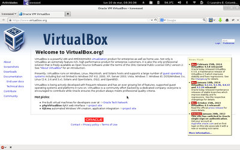{kind=link}
Para descargar el instalador, debemos ir a la sección de Downloads. Ustedes seguramente estarán viendo este tutorial desde una computadora con Windows. Por lo tanto tendrán que descargar el instalador de VirtualBox para anfitriones Windows (VirtualBox 4.X.X for Windows hosts). No importa la arquitectura de su procesador ya que el instalador funciona para 32 y 64 bits.

Cuando hagamos click sobre el link de descarga nos preguntará dónde queremos guardar el instalador. Por una cuestión de simpleza recomiendo dejarlo en la carpeta de Descargas.
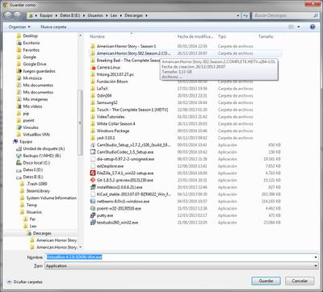{kind=link}
Una vez concluida la descarga abrimos la carpeta donde descargamos el instalador y lo ejecutamos haciendo doble click sobre el mismo.
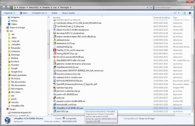{kind=link}
Cuando quieran ejecutar el archivo, al menos en Windows 7, seguramente les saldrá una advertencia de seguridad para ver si realmente quieren ejecutar el archivo. Para poder continuar con la instalación debemos darle al botón de "Ejecutar".
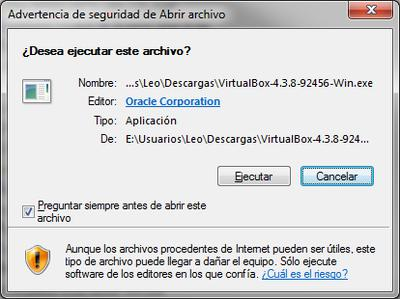{kind=link}
Una vez completado esto, arranca el instalador. El instalador es un típico instalador de Windows... siguiente, siguiente, siguiente, instalar. Y "voilà"! El programa queda instalado.
 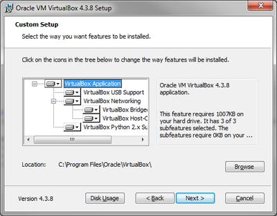
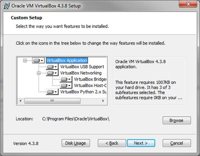
{kind=link}

 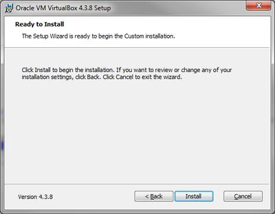
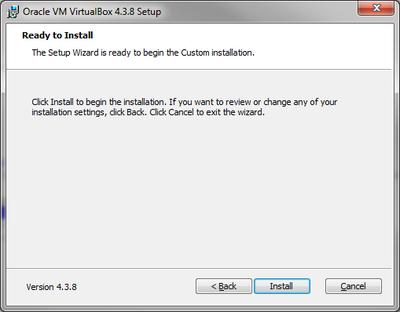
{kind=link}
Durante la instalación, saldrán algunos carteles. Según tu configuración del UAC (User Account Control, control de cuentas de usuario)
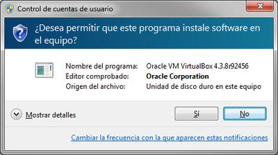{kind=link}
También para que nuestras máquinas virtuales tengan la posibilidad de conectarse a una red, VirtualBox necesita instalar un dispositivo virtual de controlador de red. Cuando el instalador quiera hacerlo les saldrá el aviso de si quieren instalar. Por supuesto que para continuar con la correcta instalación, deben aceptarlo. Si queremos, podemos tildar la opción de "Confiar en el software de Oracle Corporation" y no nos volverá a preguntar si deseamos instalarlo. Ya que, como hemos contestado que confiamos en ese software, procederá a instalar.
 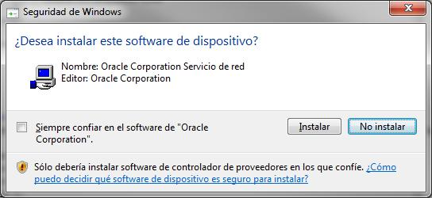
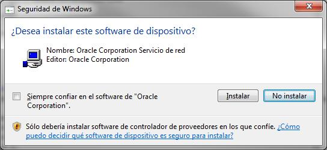
{kind=link}

Cuando termine de instalar los dispositivos, el instalador nos devolverá esta ventana para terminar la instalación y lanzar la aplicación si deseamos.
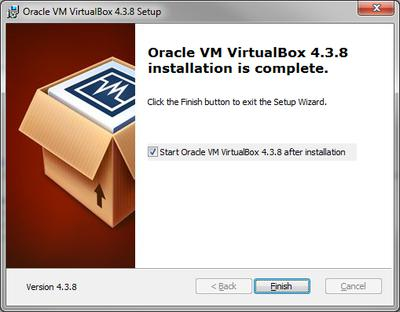{kind=link}
NOTA: Si por algún motivo cuando termina el instalador, lanzan la aplicación y le salta un cartel como el siguiente. Presionen sobre la opción "Este programa funciona correctamente". Es simplemente un tema de que Windows no reconoce la instalación inmediatamente después de instalado.
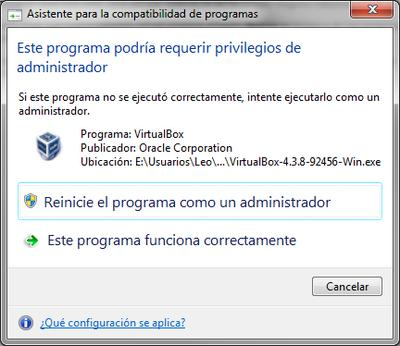{kind=link}
Finalizado todo esto, podemos observar a continuación la pantalla de bienvenida del VirtualBox. Este programa es el administrador de máquinas virtuales que nos permitirá controlar las máquinas que deseemos virtualizar.